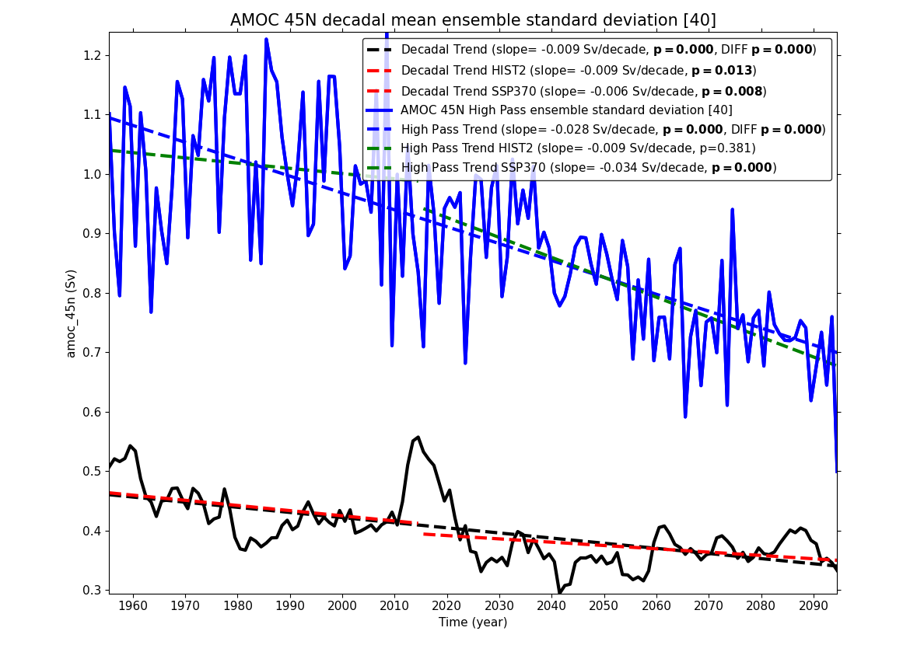

⬅ Back to gallery

CANARI Decadal and High Pass AMOC at 45N ensemble standard deviation - HIST2 and SSP370 trends
/home/users/dlrhodso/CANARI/analysis/AMOC/amoc_ensemble_spread2_decadal_hist2_ssp370_45N.png